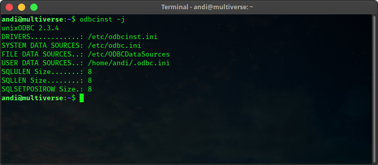
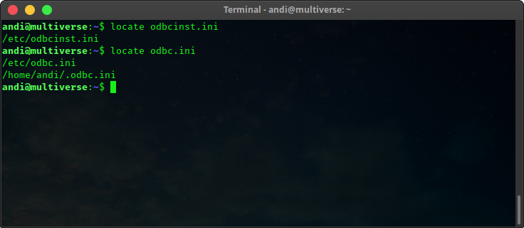
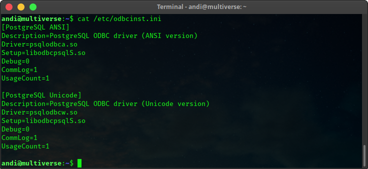
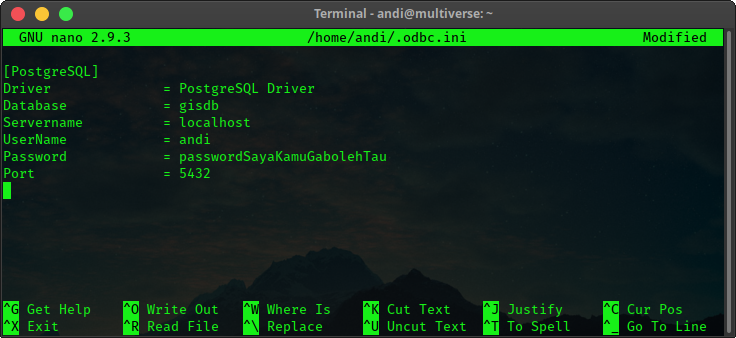

Saya sedang belajar mengelola data dalam sebuah basisdata. Sebab ketertarikan saya dengan bidang geospasial, saya coba untuk mempelajari DBMS terkenal untuk ini, yaitu PostgreSQL dengan ekstensi PostGIS.
Singkat cerita, saya sudah melakukan instalasi dan pengaturan basis data postgres + postgis di komputer saya. Selanjutnya saya ingin coba membuat koneksi untuk akses basisdata melalui RStudio. Saya merasa agak sedikit sombong karena sebelumnya sudah sukses dengan koneksi PostgreSQL lewat QGIS.
Ada dua cara membuat koneksi dari R untuk mengakses basis data:
- menggunakan paket
odbcdenganDBI - menggunakan paket
RPostgres
Untuk saat ini saya menggunakan cara yang pertama. Langkah yang saya lakukan adalah:
1. Setting odbc drivers di komputer linux
$ sudo apt update
$ sudo apt install unixodbc unixodbc-dev
$ sudo apt install odbc-postgresql 2. Periksa hasil instalasi kita
Beberapa berkas yang perlu kita tahu dan butuhkan untuk menunjang pengaturan dan kerja paket odbc di R diantaranya berkas odbcinst.ini dan odbc.ini. Di mana mereka?
Kita bisa gunakan perintah berikut di terminal:
$ odbcinst -j
Atau dengan cara lain, misalnya:
$ locate odbcinst.ini
$ locate odbc.ini
Akan ditampilkan tempat berkas-berkas itu tersimpan.
Kemudian coba kita cek apa isi dari berkas odbcinst.ini. Berikut isinya:

Sedangkan untuk berkas .odbc.ini, sepengalaman saya saat fresh-install tidak ada isinya alias masih kosong. Berikutnya kita perlu isi itu.
3. Sunting berkas odbc.ini
Berkas ini ada di dua tempat, seperti sudah kita periksa sebelumnya.
/etc/odbc.ini menyimpan pengaturan yang bisa digunakan secara global. Artinya bisa diakses oleh semua user di komputer terinstal, tetapi untuk pengaturannya kita membutuhkan akses root.
Sedangkan ~/.odbc.ini hanya untuk user tertentu (sesuai lokasi home punya user mana). Kita tidak perlu root untuk ini. Berkasnya disembunyikan di direktori home.
Sunting berkas .odbc.ini milik user menggunakan text editor nano dengan perintah di terminal:
$ nano ~/.odbc.iniIsikan detail seperti berikut:
[PostgreSQL]
Driver = PostgreSQL Driver
Database = namaDbKamu
Servername = localhost
UserName = usernamekamu
Password = passwordSayaKamuGabolehTau
Port = 5432
Ganti nilai pada bagian Database dan UserName, juga pada bagian Password, sesuai dengan pengaturan basis data PostgreSQL milik teman-teman.
4. Menginstal paket odbc dan DBI di R
install.packages("odbc")
install.packages("DBI")Kemudian restart R session.
Koneksi sudah bisa digunakan…
Sekian.
Ref: https://db.rstudio.com/best-practices/drivers/#linux-debian-ubuntu